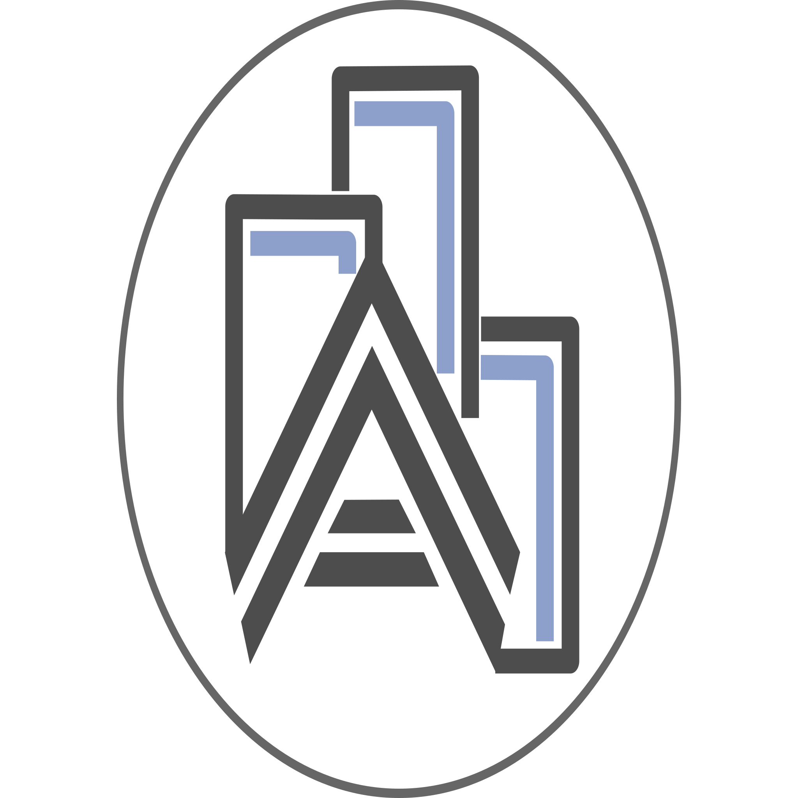

Built with a serverless architecture in mind, enabling easy deployment and scalability.
Seamless integration with OpenStreetMap data, GeoJSON, and GeoTIFF formats.
Powerful 3D mapping capabilities, enabling complex urban visual analytics.
Efficient data management and querying capabilities using DuckDB.
Efficient rendering and general purpose computations using WebGPU.
Dynamic and interactive data visualizations built using D3.js.
Learn how to use Autark with our guides, API references, and tutorials.
Get Started Tutorials Autark-map Autark-db